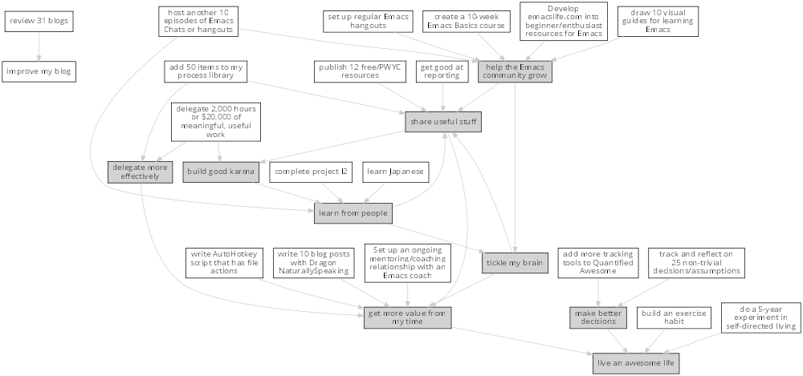

Evil plans
Curious about anything? Contact me at sacha@sachachua.com . Web: http://sachachua.com/evil-plans Raw file: evil-plans.org
Additional notes: http://sachachua.com/blog/2014/03/reflecting-goals-time/
Current goals

Including "Someday" goals
See raw file or end of document for code.

How do I want to represent specific goals?
Goals goal
live an awesome life
TODO do a 5-year experiment in self-directed living
so that I can live an awesome life
2012-2017
Questions to resolve:
- Would I prefer the structure of a regular career, or can I learn how to make the most of a more self-directed life?
- Do I understand my wants and needs enough to manage my finances with reasonable safety?
More information: http://sachachua.com/blog/experiment
What could "awesome" look like?
- Good handle on expenses, resisted lifestyle inflation
- Expenses covered by dividends/capital gains, with a reasonable buffer for the next correction (and so that I can buy the next time stocks go on sale)
- Be the kind of happy, loving, equanimous person I want to be
- Icing on the cake:
- Tickled brain from learning lots of things
- Good karma from helping lots of people
- Scaling up (building resources)
- Confederates whom I know well and am in touch with
What kind of concrete actions or projects will move me towards that? What kinds of things do I want to explore?
- ☑ E-book publishing: Easy to do once I have a clear idea of what I want to put together. I like pay-what-you-want.
- ☑ Print publishing: Doable with LaTeX and CreateSpace.
- ☐ Useful, organized non-fiction
- ☐ A way for people to self-identify as tribe members (ex: e-book purchases, mailing list signups)
- ☐ Git-tip and other microtipping?
- See other projects in this file
DONE improve our garden in 2014
so that I can live an awesome life
This year:
- Keep track of which plants were planted where
- Water regularly
- Work in the garden every 1-3 days
- Add plenty of compost
4'x8'
TODO build an exercise habit
so that I can live an awesome life
tickle my brain
so that I can get more value from my time and share useful stuff
DONE learn Morse code for all the letters; receive at 5 WPM; transmit as slowly as needed
So that I can tickle my brain
- Tried Morse Code Trainer on my phone. =) Learning my .- -… -.-. -..!
DONE memorize Latin declensions
Done
:Effort: 10:00
:CUSTOMID: memorizeLatindeclensions
:LINK: Test Latin declensions
So that I can tickle my brain
Testing: http://www.latintests.net/grammar/nouns.php - 5 days in a row, first test 100%
- One mistake (first declension), second declension still giving me prblems
- 100% first declension
CANCELLED learn image processing with the Raspberry Pi
so that I can tickle my brain
Using simplecv
- ☑ Load the images
- ☑ Calculate the absolute difference
- ☑ Identify the largest blob (minimum size of X)
- ☑ Draw the path followed by the centroid of the blob
- ☐ Figure out a better visualization for litter box monitoring
DONE Draw the goal graph based on my Org entries emacs
So that I can tickle my brain and make better decisions
CANCELLED make ABCs of Emacs
So that I can tickle my brain and share useful stuff
:CUSTOMID: makeABCsofEmacs
:LINK: Emacs ABCs
- ☑ apropos
- browse-kill-ring
- customize / compile / calc
- dired, debug-on-entry
- edebug-defun, eshell
- fastnav, ffap, fixup-whitespace
- grep-find, gnus
- help-with-help, helm
- ielm
- just-one-space
- keyboard macros, kmacro-start-macro, kbd-macro-query
- load-library, locate-library, list-packages
- magit, make-indirect-buffer
- name-last-kbd-macro
- occur (and occur-edit-mode); org
- package-list-packages, picture-mode
- quick-url, query-replace-regexp-eval
- regexp-builder, recursive-edit, recover-this-file,
- savehist-mode, server-start, smartparens
- tags-search, term, thumbs, tmm-menubar, type-break
- undo-tree-visualize
- vc-next-action, view-lossage, visual-line-mode
- where-is, winner-mode, windmove, window-configuration-to-register
- M-x (execute-extended-command)
- yank-pop
- zap-to-char
build good karma
So that I can learn from people
Is this a true goal, or it mainly on the way to something else? Are there projects that support this instead of the other stuff?
learn from people
So that I can tickle my brain and share useful stuff
TODO learn Japanese
So that I can learn from people
TODO complete project I2
So that I can learn from people
DONE project F2
So that I can learn from people and live an awesome life
:LINK: file:~/personal/people.html#*Project%20F
:CUSTOMID: projectF2
TODO host another 10 episodes of Emacs Chats or hangouts
:CUSTOMID: hostanother10episodesofEmacsChatsorhangouts
So that I can learn from people and help the Emacs community grow
- ☑ Emacs Chat: technomancy
- ☑ Emacs Chat: Xah Lee
- ☑ Emacs Chat: Bozhidar Batsov
- Bodil Stokke?
- Steve Purcell? - Jan
- Stefan Monnier?
- John Kitchin?
- Reach out to the other bloggers on Planet Emacsen
TODO Set up an ongoing mentoring/coaching relationship with an Emacs coach
So that I can get more value from my time
https://www.codementor.io/sanityinc: RoR, jQuery, TDD, Emacs, Javascript https://www.codementor.io/skeeto http://emacs-doctor.com/
Possible concrete goals:
- Follow best practices in setting up my web development environment (Rails, Javascript, NodeJS, Angular); learn how to think syntactically
- Discover what else I should be doing with Org Mode
- Set up a solid external data and backup plan
- Learn more about what I don't know I don't know (Hard!)
- Get into Emacs development
DONE complete project F
So that I can learn from people
DONE host at least four episodes for the Frugal FIRE show PROJECT
So that I can learn from people and share useful stuff
I suggested these as a way to get to know other people exploring financial independence / early retirement. I wanted to see if that was a community I resonated with.
DONE host 10 episodes of Emacs Chats [9/12] project
http://sachachua.com/blog/emacs-chat/
So that I can learn from people and help the Emacs community grow
- ☑ Emacs Chat: John Wiegley
- ☑ Emacs Chat: Avdi Grimm (Org-mode, Ruby, etc.)
- ☑ Emacs Chat: Thomas Kjeldahl Nilsson
- ☑ Emacs Chat: Carsten Dominik
- ☑ Emacs Chat: Bastien Guerry
- ☑ Emacs Chat: Sacha Chua (with Bastien Guerry)
- ☑ Emacs Chat: Magnar Sveen (Emacs Rocks)
- ☑ Emacs Chat: Iannis Zannos
- ☑ Emacs Chat: Tom Marble
- ☑ Emacs Chat: Janis Mancevics
make better decisions
so that I can live an awesome life
TODO track and reflect on 25 non-trivial decisions/assumptions project
So that I can make better decisions As listed in http://sachachua.com/blog/category/decision
What do I want to tweak about how I make decisions?
TODO add more tracking tools to Quantified Awesome
so that I can make better decisions
- Groceries
- Recipes
get more value from my time
so that I can live an awesome life
SOMEDAY write 10 blog posts with Dragon NaturallySpeaking
so that I can get more value from my time
Hmm. I am not very good at dictating blog posts, since I write as a way of figuring things out, and I end up jumping around non-linearly. So maybe dictation will have to be more about book notes and transcripts.
- Dictate blog posts
- Make posts sound more natural
- Get ideas out faster
- Rest my hands
- Dictate book notes
- Rest my hands
- Read more ergonomically
SOMEDAY write AutoHotkey script that has file actions
So that I can get more value from my time
CANCELLED read the iMacros API
So that I can get more value from my time
CANCELLED learn Plover steno
so that I can get more value from my time
CANCELLED set up Selenium for automating web actions
So that I can get more value from my time
delegate more effectively
So that I can get more value from my time
SOMEDAY delegate 2,000 hours or $20,000 of meaningful, useful work delegation project
So that I can delegate more effectively and build good karma
So far:
(let ((dollars 8229.45) (hours 486)) (format "%d dollars - %d%%; %d hours - %d%%" dollars (* (/ dollars 20000.0) 100.0) hours (* (/ hours 2000.0) 100.0)))
The work should:
- move me towards my primary goals
- help assistants improve their skills and justify better rates in the marketplace
Need to compensate for 2,166 hours as of 2014-05-16
SOMEDAY add 50 items to my process library delegation
So that I can delegate more effectively and share useful stuff
Process library - for my virtual assistants and for other people who are interested in delegation
35 items - 70% 1. How to add blogs to Feedly 2. How to add resources to the resources page and sidebar widget 3. How to add tags to Flickr sketches 4. How to animate sketches with Autodesk Sketchbook Pro and Camtasia Studio 5. How to convert a Vimeo or YouTube video to MP3 and save it for offline listening 6. How to create a Frugal FIRE event on Google+ 7. How to create a Google+ Event banner 8. How to create a Helpers Help Out event on Google+ 9. How to download invoices from InvoiceTrack 10. How to draft Q&A posts based on a transcript 11. How to draft an Emacs Basics blog post 12. How to draw and implement highlighted hand-drawn icons using CSS sprites 13. How to extract the MP3 from YouTube or an MP4 14. How to file a healthcare claim for massage 15. How to identify Q&A from a transcript 16. How to import my theme into your local development environment and get ready for work 17. How to look up additional information for people 18. How to post show notes 19. How to prepare for and host a Google Hangout on Air 20. How to process audio in Audacity 21. How to process scheduling requests 22. How to request books from the library 23. How to research related posts 24. How to set up a public conversation over Google Hangouts On Air 25. How to set up a public conversation 26. How to set up a redirection URL 27. How to summarize blog posts as tweets 28. How to transcribe audio 29. How to update Flickr with blog post URLs 30. How to update QuantifiedSelf.ca blog posts with video embeds 31. How to update a blog post with an MP3 32. How to update a book through CreateSpace 33. How to update the MP3 metadata 34. How to upload an MP3 to archive.org 35. How to write a blog post
help the Emacs community grow
so that I can tickle my brain and share useful stuff
DONE delegate to Emacs geeks
so that I can share useful stuff and help the Emacs community grow and learn from people
- Alex? waiting
- Oli? waiting
- Adam? scheduled
- Xah?
My Philippine assistants seem more reliable when it comes to work, although they don't have the same level of skills yet. Oh well!
SOMEDAY Develop emacslife.com into beginner/enthusiast resources for Emacs emacs project
so that I can help the Emacs community grow
What do I want to learn from working on EmacsLife?
- Organizing questions logically, and adding links between sections
- Writing based on an outline
- Revising with feedback
- Developing a smooth workflow for exporting my blog posts
- Update monthly, perhaps?
- Herding cats: Delegating to other geeks
- Eventually: structuring courses, creating resources
Sketching the future:
Because of the time I've invested in working on resources for the Emacs community, I have the confidence that I can logically structure my thoughts and write technical learning-oriented books. I have a community of people happy to proof-read/beta. I have a lot of experience in creating rich media resources as well.
I have a smooth workflow for identifying topics, outlining them, organizing the topics, researching information, filling in the gaps (whether I'm writing things myself or paying other people to do so), pulling everything together, and publishing and sharing the results. This may even be self-financing. I create a useful resource of at least 10,000 words at least every 12 weeks.
This gives me great ways to:
- Learn more about what I'm curious about
- Organize my thoughts and identify gaps
- Communicate clearly, approachably, and engagingly
- Share in scalable ways
SOMEDAY create a 10-week Emacs Basics course emacs specific project someday
So that I can help the Emacs community grow
http://sachachua.com/blog/tag/emacs-basics
- ☑ Use the mouse
- ☑ Call commands by name with M-x
- ☑ Customize and configure
- ☐ Learn keyboard shortcuts
- ☐ Learn Emacs Lisp
- ☐ Customize keyboard shortcuts
- ☐ Save time with keyboard macros
- ☐ Be inspired
SOMEDAY set up regular Emacs hangouts
so that I can help the Emacs community grow
Every two weeks? Every month? Need a co-host.
SOMEDAY draw 10 visual guides for learning Emacs
So that I can help the Emacs community grow
- ☑ Beginner's guide
- ☑ Keyboard shortcuts
- ☑ Org mode
- ☑ Dired
- ☑ Managing your tasks
DONE improve my blog
So that I can share useful stuff
CANCELLED split off topic-focused views
So that I can improve my blog
SOMEDAY review 31 blogs
So that I can improve my blog
4 items - 12% 1. Engagement, sticky shares - markevans.ca 2. Fat footer, lots of structure - extension.org 3. Lots of comments - rootofgood.com 4. Sticky sidebar get started - mywifequitherjob.com
DONE read and reflect on key philosophical ideas
So that I can live an awesome life and tickle my brain
- Thoreau (Walden): Wanting little lets you be free. Also, note about having people over.
- Emerson (Self-Reliance): Embrace being different.
- Borsodi: Factory life; the quantity-minded vs quality-minded. I don't agree with lots of stuff in the Ugly Civilization, though.
Epic Quest of Awesome
Related to http://quest.digitalcrusader.ca/ and http://www.nerdfitness.com/epic-quest/
Should tie this in with my goal graph somehow.
Accomplishments
Total experience points (XP) as of 2015-01-20: 2985 - level 3: savvy (somewhat). 765 XP before next level.
| Approximate date | Category | XP | Description |
|---|---|---|---|
| 1995 | Cooking | 10 | Made lasagna |
| 1995 | Learning | 5 | Competed in chess tournaments |
| 1995 | Learning | 10 | Graduated with special award |
| 1998 | Connecting | 5 | Asked someone to the prom |
| 1998 | Connecting | 5 | Went to leadership conference |
| 1999 | Connecting | 5 | Asked someone in a different school to a dance |
| 1999 | Drawing | 5 | Had drawing and poem included in a book |
| 1999 | Learning | 10 | Graduated with special award |
| 1999 | Life | 5 | Danced swing and chacha |
| 1999 | Programming | 20 | Won various programming contests in high school |
| 2000 | Programming | 50 | Picked up Emacs |
| 2001 | Analysis | 20 | Learned pivot tables |
| 2001 | Programming | 10 | Scored in the top 10 for the JITSE |
| 2001 | Speaking | 20 | Started public speaking |
| 2001 | Writing | 50 | Started a blog |
| 2002 | Learning | 10 | Contributed to a published paper |
| 2002 | Programming | 20 | Part of the team that won Best Academic Solution in Microsoft Worldwide .NET Best contest |
| 2002 | Programming | 10 | Got the top score on the JITSE |
| 2002 | Programming | 10 | Contributed to open source project |
| 2002 | Programming | 10 | Gained commit rights to an open source project |
| 2003 | Cooking | 20 | Cooked for friends |
| 2003 | Finance | 10 | Started opportunity fund with prize from Trend Micro Software Contest |
| 2003 | Learning | 100 | Graduated from university |
| 2003 | Learning | 50 | Experimented with wearable computing |
| 2003 | Learning | 5 | Received BPI Science Award |
| 2003 | Learning | 5 | Graduated with special award |
| 2003 | Programming | 20 | Did well in international programming contests in university |
| 2003 | Programming | 20 | Maintained open source project (Planner) |
| 2003 | Programming | 10 | Part of the team that won the Trend Micro Software Contest |
| 2003 | Speaking | 5 | Featured in Philippine news |
| 2004 | Connecting | 10 | Phased out unhelpful friends |
| 2004 | Finance | 10 | Started tracking my finances with Ledger |
| 2004 | Learning | 10 | Applied for master's degree |
| 2004 | Life | 50 | Went for technical internship in Japan |
| 2004 | Life | 10 | Survived my first winter |
| 2004 | Programming | 10 | Built project submission system |
| 2004 | Speaking | 10 | Presented at an IT education conference |
| 2004 | Speaking | 5 | Spoke to an audience of > 750 people |
| 2005 | Connecting | 5 | Digital activism: Made a fuss about the DigitalPinay project |
| 2005 | Learning | 5 | Passed JLPT 3 |
| 2005 | Life | 100 | Moved to Canada |
| 2005 | Life | 20 | Survived my first Canadian winter |
| 2005 | Programming | 10 | Built alternative class registration system |
| 2006 | Cooking | 10 | Went to cooking workshops |
| 2006 | Finance | 10 | Got IBM to fund my studies |
| 2006 | Life | 10 | Got myself out of a bind |
| 2006 | Life | 5 | Danced tango |
| 2006 | Life | 5 | Danced Renaissance dances in a performance |
| 2006 | Programming | 10 | Picked up Ruby on Rails |
| 2006 | Speaking | 10 | Survived TA-ing a class that I was really uncertain about |
| 2007 | Business | 30 | Started working at IBM |
| 2007 | Business | 20 | Earned top-contributor ratings at work |
| 2007 | Connecting | 50 | Asserted my independence in terms of relationships |
| 2007 | Connecting | 10 | Parted ways with S |
| 2007 | Cooking | 10 | Survived without meal plan in grad school |
| 2007 | Cooking | 5 | Made meringue |
| 2007 | Drawing | 20 | Drew on Nintendo DS |
| 2007 | Finance | 10 | Set up RRSP |
| 2007 | Finance | 10 | Graduated with savings instead of debt |
| 2007 | Learning | 50 | Finished thesis |
| 2007 | Life | 5 | Went to a charity gala |
| 2007 | Writing | 50 | Migrated my blog to Wordpress |
| 2008 | Analysis | 5 | Analyzed my word use |
| 2008 | Connecting | 10 | Took W- and J- to Manila |
| 2008 | Cooking | 10 | Tried out community-supported agriculture box |
| 2008 | Cooking | 10 | Learned canning |
| 2008 | Cooking | 5 | Made egg tarts |
| 2008 | Drawing | 20 | Won Slideshare best presentation contest |
| 2008 | Drawing | 20 | Drew on Cintiq |
| 2008 | Life | 10 | Adopted two cats |
| 2008 | Life | 10 | Explored krav maga |
| 2008 | Life | 10 | Explored yoga |
| 2008 | Life | 10 | Explored static trapeze |
| 2008 | Life | 10 | Started a garden |
| 2008 | Life | 5 | Used a router to round edges |
| 2008 | Programming | 30 | Delivered Drupal projects |
| 2008 | Programming | 5 | Explored Second Life programming |
| 2008 | Programming | 20 | Learned AutoHotkey |
| 2008 | Speaking | 30 | Made A Gen Y Guide to Web 2.0 at Work |
| 2008 | Speaking | 20 | Made A Shy Connector |
| 2008 | Speaking | 20 | Presented at IBM Technical Leadership Conference |
| 2008 | Speaking | 10 | Gave part of a keynote at an IBM conference |
| 2008 | Speaking | 10 | Won Best Presentation at the IBM Best Practices Conference |
| 2008 | Writing | 5 | Tried out speech recognition |
| 2008 | Writing | 5 | Pitched book proposal |
| 2009 | Business | 30 | Started delegation experiments |
| 2009 | Business | 20 | Facilitated executive workshops |
| 2009 | Connecting | 50 | Made long term plans with W |
| 2009 | Connecting | 5 | Tried improv classes |
| 2009 | Finance | 10 | Set up TFSA |
| 2009 | Life | 20 | Got the hang of bicycle commuting |
| 2009 | Life | 20 | Got a chest freezer |
| 2009 | Life | 10 | Sewed stuff |
| 2009 | Programming | 10 | Developed community toolkit |
| 2009 | Speaking | 20 | Presented at IBM Technical Leadership Conference again |
| 2009 | Speaking | 10 | Spoke at Drupalcon |
| 2010 | Connecting | 30 | Married W |
| 2010 | Drawing | 50 | Drew on tablet PC |
| 2010 | Life | 50 | Became a permanent resident |
| 2010 | Life | 20 | Built Adirondack chairs |
| 2010 | Life | 10 | Brought my cat over |
| 2010 | Life | 10 | Adapted to winter |
| 2010 | Life | 5 | Got my wisdom teeth removed and dealt with post-op procedures; was taken care of afterwards |
| 2010 | Programming | 30 | Delivered Rails projects |
| 2010 | Programming | 5 | Introduced code coverage goals for my team project |
| 2010 | Programming | 5 | Wrote behaviour-driven tests for my team project |
| 2011 | Analysis | 20 | Built Quantified Awesome for tracking time |
| 2011 | Analysis | 20 | Used my time and money analysis to plan for experiment |
| 2011 | Analysis | 10 | Built Quantified Awesome for tracking clothes |
| 2011 | Business | 10 | Promoted at IBM |
| 2011 | Drawing | 5 | Drew comics for the IBM intranet homepage |
| 2011 | Finance | 10 | Set up non-registered investments |
| 2011 | Life | 20 | Disassembled washing machine and dryer |
| 2011 | Life | 5 | Dealt with missed flight |
| 2011 | Programming | 5 | Handled finicky web design things |
| 2011 | Programming | 10 | Switch to a virtual private server |
| 2012 | Analysis | 10 | Became co-organizer for Quantified Self Toronto |
| 2012 | Analysis | 5 | Tracked books |
| 2012 | Analysis | 10 | Presented at Quantified Self conference |
| 2012 | Business | 50 | Incorporated |
| 2012 | Business | 30 | Experimented with sketchnoting business |
| 2012 | Business | 10 | Experimented with various business models |
| 2012 | Business | 10 | Sketchnoted Lean Startup Day |
| 2012 | Connecting | 30 | Worked on I- |
| 2012 | Connecting | 10 | Started Emacs Chat series |
| 2012 | Connecting | 10 | Worked on F- |
| 2012 | Connecting | 10 | Worked on D- |
| 2012 | Cooking | 5 | Made coconut buns |
| 2012 | Cooking | 5 | Switched to a French pin |
| 2012 | Cooking | 5 | Made pie |
| 2012 | Finance | 5 | Shifted from watching movies and buying books to using the library for practically everything |
| 2012 | Learning | 100 | Started 5-year experiment |
| 2012 | Programming | 20 | Converted configuration to Org |
| 2012 | Writing | 20 | Created an index of blog posts |
| 2012 | Writing | 10 | Compiled edited archive of my favourite posts from 20-30 years of age |
| 2013 | Analysis | 5 | Tracked stuff |
| 2013 | Analysis | 20 | Used Tableau for client work |
| 2013 | Business | 20 | Paid myself a salary |
| 2013 | Business | 20 | Filed corporate tax returnfor the first time |
| 2013 | Business | 10 | Amended corporate tax return |
| 2013 | Business | 10 | Included in books on Web 2.0 |
| 2013 | Connecting | 20 | Attended Emacs Conference |
| 2013 | Connecting | 10 | Joined Hacklab |
| 2013 | Connecting | 10 | Helped with study groups |
| 2013 | Cooking | 5 | Made pad thai from scratch |
| 2013 | Cooking | 5 | Made pizza from scratch |
| 2013 | Drawing | 20 | Made guide for learning Emacs |
| 2013 | Drawing | 10 | Made guide for learning Org |
| 2013 | Drawing | 10 | Scanned my notebooks |
| 2013 | Finance | 50 | Reached goal 4 |
| 2013 | Learning | 30 | Focused on self-directed learning |
| 2013 | Learning | 5 | Finished a MOOC |
| 2013 | Life | 5 | Dealt with lost passport |
| 2013 | Life | 5 | Learned about Stoicism |
| 2013 | Writing | 20 | Compiled Sketchnotes 2012 |
| 2014 | Analysis | 5 | Tracked litter box use |
| 2014 | Business | 30 | Started selling PWYW resources |
| 2014 | Business | 10 | Paid myself dividends |
| 2014 | Business | 5 | Narrated videos for client project |
| 2014 | Connecting | 30 | Worked on I2 |
| 2014 | Connecting | 20 | Worked on F with P |
| 2014 | Connecting | 20 | Enjoyed park time with friends |
| 2014 | Connecting | 5 | Completed 10 episodes of Emacs Chat series |
| 2014 | Connecting | 10 | Started Emacs Hangout series |
| 2014 | Connecting | 10 | Experimented with Google Helpouts - got good reviews |
| 2014 | Cooking | 10 | Started cooking at Hacklab |
| 2014 | Cooking | 5 | Made good garlic fried rice |
| 2014 | Cooking | 5 | Made Japanese curry from scratch |
| 2014 | Cooking | 5 | Made Thai curry from scratch |
| 2014 | Drawing | 20 | Animated videos for client project |
| 2014 | Drawing | 20 | Created print book of sketches |
| 2014 | Drawing | 5 | Drew in sketchbooks |
| 2014 | Drawing | 5 | Included in books on drawing |
| 2014 | Finance | 20 | Reached goal 3 |
| 2014 | Learning | 5 | Worked through Minna no Nihongo I by myself |
| 2014 | Learning | 5 | Finish a paid course |
| 2014 | Life | 50 | Became a Canadian citizen |
| 2014 | Programming | 20 | Used NodeJS and AngularJS for a client project |
| 2014 | Programming | 5 | Pulled information out of Evernote |
| 2014 | Speaking | 5 | Experimented with Frugal Fire series |
| 2014 | Speaking | 5 | Experimented with Helpers Help Out series |
| 2014 | Writing | 5 | Compiled Sketchnotes 2013 |
| 2014 | Writing | 10 | Started private journal |
| 2015 | Analysis | 10 | Featured in news for tracking |
| 2015 | Analysis | 5 | Tracked index cards |
| 2015 | Drawing | 10 | Drew on index cards |
| 2015 | Life | 10 | Reduced consulting hours to focus on personal projects |
| 2015 | Programming | 5 | Pulled information out of Flickr |
| 2015 | Programming | 5 | Used continuous integration testing for one of my projects |
Future quests
| Category | Estimated XP | Description |
|---|---|---|
| Cooking | 10 | Made braising and other fancy cooking terms part of my vocabulary |
| Cooking | 10 | Adjusted the feel of things by using herb combinations |
| Cooking | 20 | Cut standard sizes |
| Cooking | 20 | Learned advanced cutting and garnishing techniques |
| Cooking | 20 | Regularly garnish and plate pretty meals |
| Cooking | 5 | Made paella |
| Cooking | 5 | Made special types of bread, including sourdough |
| Cooking | 10 | Competently made pizza |
| Finance | 10 | Sold stocks in a non-registered account and properly accounted for them |
| Finance | 20 | Weathered a bear market with lots of investments |
| Analysis | 20 | Used animations to understand data |
| Writing | 50 | Wrote a set of three or four 4-part courses |
| Writing | 50 | Developed ability to look at my writing with strangers' eyes |
| Writing | 50 | Developed ability to cut writing ruthlessly |
| Writing | 100 | Wrote book instead of compiling it |
| Speaking | 10 | Made videos part of the way I regularly share (~12 original videos a year) |
| Drawing | 20 | Drew recognizable people |
| Business | 50 | Dealt with a famine year and didn't panic |
| Business | 50 | Enjoyed working in someone else's small company |
| Connecting | 20 | Organized meetups |
| Learning | 20 | Learned from a coach over 3 months |
| Programming | 5 | Set up autocomplete |
| Programming | 5 | Set up flychecking |
| Programming | 10 | Set up style checking and code analysis |
| Programming | 20 | Got feedback from coaches or open source community |
| Programming | 5 | Made test-driven development part of my normal workflow |
| Programming | 5 | Got the hang of a CSS framework |
| Programming | 5 | Got the hang of a CSS preprocessor |
| Programming | 5 | Got the hang of a Javascript preprocessor |
| Programming | 5 | Helped other people program more effectively |
| Life | 20 | Was tranquil and resilient in the face of sickness |
| Life | 30 | Was tranquil and resilient in the face of the death of someone close to me |
| Life | 10 | Was tranquil and resilient in the face of my mortality |
| Life | 100 | Enjoyed middle age |
| Life | 100 | Enjoyed old age |
Old graph

Code
(let ((count 0) (files (directory-files directory nil pattern))) (format "%d items - %d%%\n%s" (length files) (/ (* 100.0 (length files)) target) (mapconcat (lambda (x) (setq count (1+ count)) (format "%d. %s" count (replace-regexp-in-string strip "" x))) files "\n")))
(defvar include-someday nil) (defun sacha/fill-string (string new-fill-column &optional replace-char) "Wrap STRING to NEW-FILL-COLUMN. Change newlines to REPLACE-CHAR." (with-temp-buffer (insert string) (let ((fill-column new-fill-column)) (fill-region (point-min) (point-max)) (if replace-char (progn (goto-char (point-min)) (while (re-search-forward "\n" nil t) (replace-match replace-char t t)))) (buffer-string)))) (defun sacha/org-map-goals (tag) "Return an alist, based on the TAG tree and \"so that I can\" link structure. Structure: ((nodes . ((components) ...)) (edges . ((a . b) ...)))" (let (nodes edges) ;; Go through the entries (org-map-entries (lambda () (let ((heading (org-heading-components))) (unless (member (elt heading 2) (if include-someday '("DONE" "CANCELLED") '("DONE" "SOMEDAY" "CANCELLED"))) (save-excursion (save-restriction ;; Ignore subtrees in the body (org-narrow-to-subtree) (save-excursion (org-set-property "CUSTOM_ID" (replace-regexp-in-string "[^A-Za-z0-9]" "_" (elt heading 4)))) (end-of-line) (narrow-to-region (point-min) (if (re-search-forward (concat "[\r\n]\\(" org-outline-regexp "\\)") nil t) (match-beginning 1) (point-max))) (goto-char (point-min)) (when (> (car heading) 1) (setq nodes (cons heading nodes))) (when (re-search-forward "so that I can" nil t) (while (re-search-forward org-bracket-link-regexp (line-end-position) t) (setq edges (cons (cons (elt heading 4) (match-string-no-properties 1)) edges))))))))) tag) (list (cons 'nodes nodes) (cons 'edges edges)))) (defun sacha/org-map-to-graphviz (map fill-column) "Convert MAP to a graphviz representation. Wrap titles at FILL-COLUMN." (concat "digraph G {\n" "node [shape=box,fontname=\"Open Sans\",pad=1]\n" "edge [color=\"#CCCCCC\"]\n" (mapconcat (lambda (x) (format "\"%s\" -> \"%s\"" (sacha/fill-string (car x) fill-column "\\n") (sacha/fill-string (cdr x) fill-column "\\n"))) (cdr (assoc 'edges map)) "\n") "\n" (mapconcat (lambda (x) (format (if (null (elt x 2)) (concat "\"%s\" [style=filled, URL=\"#%s\", tooltip=\"%s\"]") "\"%s\" [URL=\"#%s\", tooltip=\"%s\"]") (sacha/fill-string (elt x 4) fill-column "\\n") (replace-regexp-in-string "[^A-Za-z0-9]" "_" (elt x 4)) (elt x 4))) (cdr (assoc 'nodes map)) "\n") "}\n")) (org-babel-execute:dot (sacha/org-map-to-graphviz (sacha/org-map-goals tag) fill-column) params)